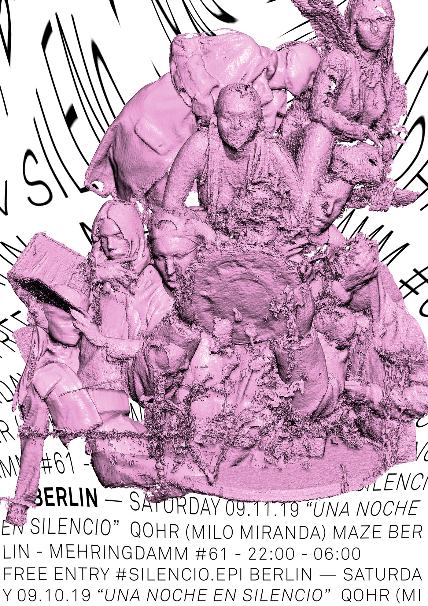
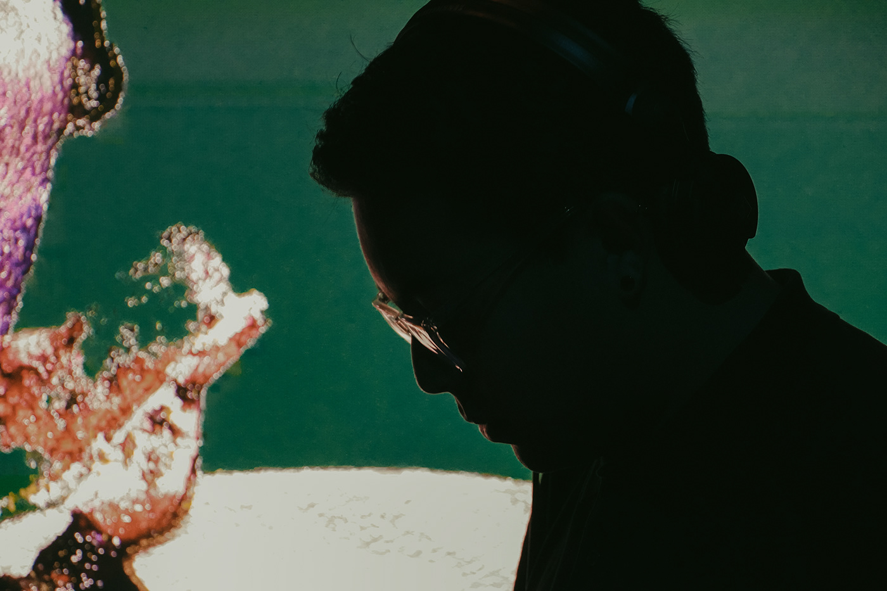

"Una Noche En Silecio", Milo Miranda (QOHR) Live at Berlin by Silencio EPI, 2019. Berlin, DE
QOHR is a sonic project that constructs intricate, organic soundscapes from reworked and manipulated audio fragments. Through these layered compositions, the artist explores the subtle tension between presence and absence, creating spaces that invite introspection and deep listening. The work reflects on the emotional void often found in a society driven by speed and instant gratification, particularly within today’s fast-moving music scene. Each performance encourages the audience to slow down, immerse themselves in the textures, and reconsider the pace, intensity, and emotional resonance of contemporary sound.

